Ахаулья Ляляпта
- 21-23 февраля 2009 -
Суббота. Редкий случай - идем по мамайской тропе в шеренгу :)
Дядя Паша задает неспешный ритм, никто никого не обгоняет, никто никого
не отстает. Мороз -20С, приморозило, раньше как-то все -10С, да -15С.
По приходу в зимовье прикалываемся над местным соболем - бедолага сожрал
пакетик мускатного ореха, все разбросал и все загадил. Наверное, он и
с мышами разговаривал, ведь мускатный орех штука жОсткая :)
Неспеша пообедали и пошли кататься. На Лесной укатила группа снегоходов
и народ там уже начал кататься, так что мы решили идти на Три Березы,
хоть туда и не затроплено было... Я в этом сезоне первый раз тропил :)
. 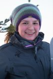
. 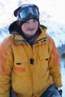
Лёха, Ульяна, Никита и я - тропим на Три Березки
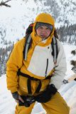
.
. 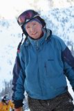
Саня, Вова, Миха - тихо подкрались сзади
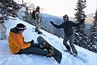
К старту готовы !!!
Лёха на своей хвостатой доске просто улетел сразу куда-то вниз, с криками
и гиканьем :) Целина в общем-то хорошая, вот только моя доска на таком
морозе плохо скользит, не парафинил ее "на минус" в этом сезоне.
Средний дроп как всегда страшный :) Ульяна и Никита медленно и верно осваивают
катание в белом и глубоком :)
На второй заход не пошли, а просто клёво попрыгали на маленьком трамплине
возле тропы...
Вечером, вчетвером, скромно отметили наступающий Буддийский Новый Год,
воскурили благовония, а потом устроили литературные посиделки, травили
байки и слушали аудиокниги...
"Ахаулья ляляпта" :)
Воскресенье. Ночью холодно было, с вечера обломались
за сухими дровами сходить, топили печку сырыми и вот результат. Да и за
бортом -17С сказывается, да и одной Ульянки на всех не хватает погреться
:) В общем я замерз и потому был утренним добровольным дежурным - топил
печь и кипятил чайник. Как потом выяснилось, не я один - в это же время
на западном берегу Байкала, в районе Большого Голоустного, тоже кто-то
разводил костер и варил чай из льдинок :) После бутербродного завтрака
я и Лёха двинули на Мамай прокатиться по Высокому цирку, а Никита и Ульяна
решили раскатать учебку в хлам...
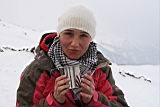
. 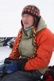
. 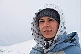
Оля, Комар и Вера - встретили их на Мамае и сманили за собой :)
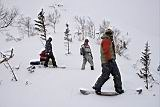
. 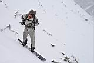
. 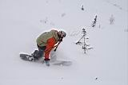
. 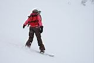
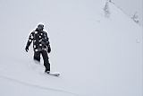
.  .
. 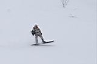
. 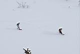
Покатушки с Высокого цирка. Места всем хватило, склон широкий и стабильный.
Снег местами мягкий, местами жесткий. Рельеф читается плохо - сильно пасмурно,
да и склон теневой. Короче - обычный такой экстрим :)
Внизу у кунга встретили Андрея, Женю и Эмиля, мы с Лёхой решили еще покататься.
Тем более что я взял GPS, надо же треки писать! А как же их писать, если
не ходить и не кататься?! :)
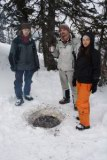
. 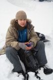
Развели костер на у Трех Берез, погреться
пока меня ждали, а то я долго ходил за чаем в зимуху...
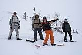
Лёха, Эмиль, Женя, Андрей
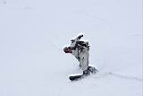
. 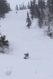
. 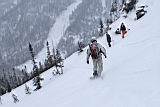
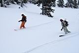
. 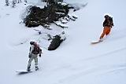
Поднялись по гребню выше леса и поехали "на севера". Снег отличный!
Выкатили весело по нашему ручью, он уже снегом засыпан хорошо,
но попрыгать на кочках и поваляться там завсегда можно :)
Вечером позвали в гости Андрюху и Женю, а то они там одни остались -
иркутяне сегодня уехали, "байкальчане" Оля и Вера тоже. Эмиль
сегодня привел сладкую парочку, Андрея и Машу. Маша оказалась первой Машей
в Нашей Маше, и по этому поводу пили. Еще впервые зашли в гости Дядя Паша
и Дядя Малюк - по этому поводу тоже пили. Еще из соседней зимухи позаимствовали
гитару - по этому поводу тоже неоднократно пили и конечно же громко пели.
Еще неожиданно появились святоносцы Ира, Макс и Света, они вчера катали
морозный экстрим на Святом Носе, а сегодня утром от туда уехали, потому
что там все пьют - и по этому поводу тоже пили ! :)
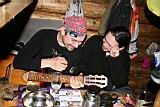
. 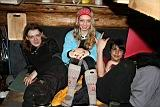
У некоторых читателей может сложиться впечатление, что на
Мамае одни алконавты, но это не так, уверяю вас :) просто было много друзей,
много хороших событий, много любимых песен и чисто случайно оказалось
много водки :) Да и не все ее пьют, некоторым уже и так хорошо :)
Понедельник. Рано утром испив чайку, убежал на электричку в Выдрино.
Улька тоже хотела сегодня домой выходить, но вовремя передумала - темно
и снег идет. Так что чем народ занимался 23 февраля на Мамае, знать не
могу, я в это время защищал малую родину от компьютерных вирусов :)
Улитка - допиши продолжение или дополнение, Джа тебе в помощь :)
Фоты и байки : Лёха Слюдянский
Март 2009
|